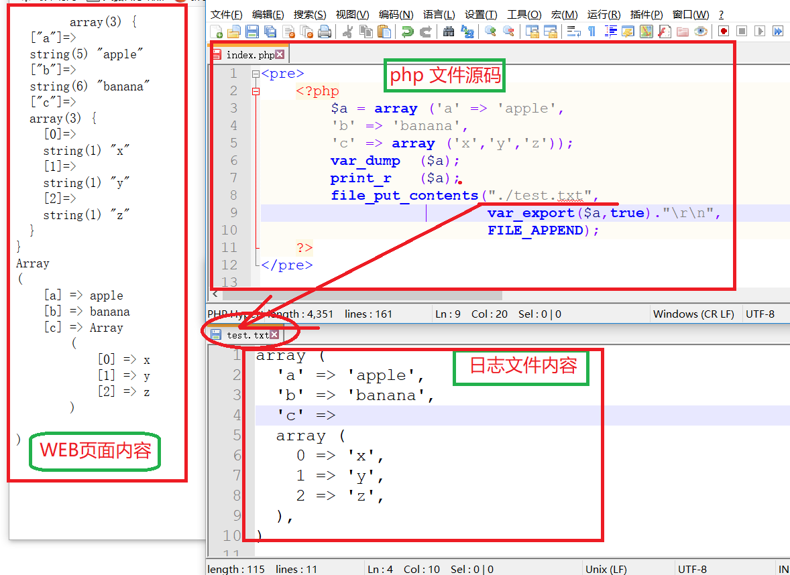

php
php一、基于win10搭建php环境工具/原料方法/步骤 1、下载相应的软件（没有装vc14的一定要安装)方法/步骤2、开始安装方法/步骤3、配置PHP方法/步骤4、配置Apache方法/步骤5、然后将Apache安装到系统服务中方法/步骤6、开启几个常用的php扩展方法/步骤7、MySQL的配置二、环境配置好后，验证一下三、第一个页面1、第一个静态页面2、用于调试的函数A、exit 和 die 函数，效果相同，输出一个字符串，然后退出B、var_dump()和print_r()3、PHP file_put_contents()将内容打印到后台文件中查看四、 PHP 学习正式开始（runoob 誊写）1、helloworld 样例2、PHP变量3、变量作用域4、global 关键字5、static 关键字6、参数7、echo / print 语句8、EOF关键字9、数据类型10、PHP合并运算符11、库函数12、PHP 运算符13、PHP 比较运算符14、PHP 逻辑运算符15、三元运算符16、switch 语句17、数组18、排序19、php 超全局变量，是 PHP系统自带的变量A、$GLOBALS 是PHP的一个超级全局变量组，在PHP脚本的全部作用域中都可以访问。B、_SERVERC、$_REQUESTD、$_POSTE、$_GET五、语法1、while循环2、do_while3、for4、foreach六、函数1、创建函数2、还参数的函数3、带两个参数的函数4、函数返回值七、魔术变量8个1、__LINE__2、__FILE__3、__DIR__4、__FUNCTION__5、__CLASS__6、__TRAIT__（暂时明确看明白）7、__METHOD__8、__NAMESPACE__八、命名空间(namespace)1、基础知识2、子命名空间3、命名空间的使用命名空间的顺序九、面向对象1、重要概念2、类的继承与重写3、接口4、抽象类5、Final 关键字十、表单1、表单交给后台 php 处理2、PHP 获取下拉菜单的数据3、处理多选菜单4、单选按钮表单5、复选框6、表单验证7、简单的正则表达式，验证字符串合法性十一、include 和 require 语句十二、十三、十四、
一、基于win10搭建php环境
这里是基于win10配置php-7.1.0+apache2.4.23+mysql-5.7.16的介绍工具/原料
- 环境 win10 64位（32位的电脑选择下载32位的，32位的软件能在64位的电脑运行，反之则不行，最好是下载和电脑位数匹配的）
- php-7.1.0 php-7.1.0-Win32-VC14-x64.zip
- apache 2.4.23 httpd-2.4.23-win64-VC14.zip
- mysql-5.7.16 mysql-5.7.16-winx64.zip
方法/步骤 1、下载相应的软件（没有装vc14的一定要安装)
- 先去微软官网下载vc14,网址为https://www.microsoft.com/zh-cn/download/details.aspx?id=48145，这里下载中文简体的，然后下载好之后一步步安装就好了。
- 下载apache 2.4.23， httpd-2.4.23-win64-VC14.zip，网址为http://www.apachelounge.com/download/，这里选择的是免安装版的
- 下载php-7.1.0，php-7.1.0-Win32-VC14-x64.zip 这里我们选择的是线程安全版，关于线程安全版与非线程安全版的区别可 自行上网查阅相关资料，下载网址为http://windows.php.net/download/ ，最后注意选择相应位数的版本下载，这里我是下载64位的
- 下载mysql-5.7.16，mysql-5.7.16-winx64.zip，下载网址为http://dev.mysql.com/downloads/mysql/，同样的选择64位的下载。32位的电脑下载32位的。这个软件也是免安装版的，到时候只要解压到某个文件夹就好了。
方法/步骤2、开始安装
- Apache我们这里下载的是zip压缩包，解压后放到合适的位置就好了，这里我们放在E盘的phptools文件夹中的ApacheServer文件夹中，这个文件夹是自己新建的，可以自己命名。
- php 下载后也是zip包，同样解压到合适位置，我们这里也将其放在E盘的phptools文件夹下的php7.1目录下,php7.1文件夹需要自己新建
- MySQL选择的是免安装版的，也就是Zip压缩包，这就更简单了，同样是解压到合适的位置，这里我们也将其放在E盘的phptools文件夹下的MySQL目录下,解压安装后如下图
方法/步骤3、配置PHP
- 首先将
E:\phptools\php7.1\php.ini-production复制一份，并重命名为php.ini；- 将
E:\phptools\php7.1和E:\phptools\php7.1\ext加入环境变量PATH中,选中计算机，右键属性-->高级系 统设置 -->环境变量-->系统变量，找到Path，编辑，在其后加上`;E:\phptools\php7.1;E:\phptools \php7.1\ext`
方法/步骤4、配置Apache
用记事本打开E:\phptools\ApacheServer\Apache\conf
查找ServerRoot，修改ServerRoot
"C:/Apache24" => ServerRoot "E:/phptools/ApacheServer/Apache"（这里输入的是你解压apache安装包后放的位置）查找#ServerName www.example.com:80 ，修改为 ServerName localhost:80 (去掉前面的#)，如果你的电脑的80端口已经被占用了的话，这里我们就不能用80端口了，可以修改成其它的端口，比如90。当然我们还要搜索Listen，把80端口改成90，其它的就不用修改了，只需要修改这两个地方。
查找DocumentRoot "c:/Apache24/htdocs" ， 修改为DocumentRoot "E:/phptools/ApacheServer/Apache/htdocs"
查找
<Directory "c:/Apache24/htdocs">，修改为<Directory " E:/phptools/ApacheServer/Apache/htdocs ">找到DirectoryIndex index.html ，修改为 DirectoryIndex index.html index.php index.htm (这里我们添加了index.php index.htm)
查找ScriptAlias /cgi-bin/ "c:/Apache24/cgi-bin/" ，修改为 ScriptAlias /cgi- bin/ "E:/phptools/ApacheServer/Apache/cgi-bin"
查找
<Directory "c:/Apache24/cgi-bin">修改为<Directory "E:/phptools/ApacheServer/Apache/cgi-bin/">最后在E:/phptools/ApacheServer/Apache/conf/httpd.conf最后一行加上
xxxxxxxxxxLoadModule php7_module "E:/phptools/php7.1/php7apache2_4.dll"AddHandler application/x-httpd-php .php .html .htmAddType application/x-http-php .php .html .htmPHPIniDir "E:/phptools/php7.1"
方法/步骤5、然后将Apache安装到系统服务中
- 然后我们如果把Apache安装到系统服务中的话，我们就可以直接在系统服务中启动了。具体方法是打开任务管理器——>服务——>找到Apache，然后右键启动就好了。
- 当然这里不安装也是可以的，只是启动Apache的时候要到E:\phptools\ApacheServer\Apache\bin\ApacheMonitor.exe中去，启动前还要运行httpd.exe
方法/步骤6、开启几个常用的php扩展
用记事本打开E:\phptools\php7.1\php.ini
将
; extension_dir = "ext"修改为extension_dir = "ext"（去掉extension前面的分号）将
;extension=php_mbstring.dll修改为extension=php_mbstring.dll（去掉extension前面的分号,这是php多字节字符串扩展）将
;extension=php_mysqli.dll修改为extension=php_mysqli.dll（去掉extension前面的分号）
方法/步骤7、MySQL的配置
xMySQL免安装版环境配置已有朋友写过相关经验，我就不赘述了，参考经验朋友niyikai写的经验即可。但是这里需要注意的是5.7版本里面没有data文件夹。在启动之前需要初始化，使用cmd命令行进入bin文件夹后，再输入mysqld --initialize ,这样才能正常启动MySQL。还有密码的问题，5.7版本的MySQL随机附带了一个登录密码。这个密码在后来生成的data文件夹下。文件的名字是你的计算机名.err。2016-12-10T16:18:50.886005Z 1 [Note] A temporary password is generated for root@localhost: fdglskdjggsl 加粗的即为登录密码。还有需要注意的是cmd命令必须是以管理员权限运行的，否则权限不够，会报错。下图就是MySQL成功启动并且登录后的界面。
二、环境配置好后，验证一下
win10_PHP_Apache_MySQL_EnvSetup.html
三、第一个页面
1、第一个静态页面
x
在 E:\phptools\ApacheServer\Apache\htdocs 目录下，建立一个 index.php ，内容如下：<!DOCTYPE html><html><body><?phpecho "Hello World!<br/>";echo strlen("Hello world!\n"); ?></body></html>
启动 apache服务器，并浏览之

2、用于调试的函数
A、exit 和 die 函数，效果相同，输出一个字符串，然后退出
xxxxxxxxxx<?php exit("hello word"); ?><?php die("hello word"); ?>B、var_dump()和print_r()
xxxxxxxxxx网页内容：<pre> <?php $a = array ('a' => 'apple', 'b' => 'banana', 'c' => array ('x','y','z')); var_dump ($a); print_r ($a); ?></pre>输出：array(3) { ["a"]=> string(5) "apple" ["b"]=> string(6) "banana" ["c"]=> array(3) { [0]=> string(1) "x" [1]=> string(1) "y" [2]=> string(1) "z" }}Array( [a] => apple [b] => banana [c] => Array ( [0] => x [1] => y [2] => z ))3、PHP file_put_contents()将内容打印到后台文件中查看

四、 PHP 学习正式开始（runoob 誊写）
1、helloworld 样例
xxxxxxxxxx//基本输出指令是 echo 和 print<!DOCTYPE html><html><body><h1>My first PHP page</h1><?phpecho "Hello World!";?></body></html>2、PHP变量
xxxxxxxxxxphp 文件内容：<?php $x=5; $y=6; $z=$x+$y; echo $z;?>将此文件放到 apache 根目录的一个子目录下，然后访问之：http://127.0.0.1/study/var.php输出11
3、变量作用域
xxxxxxxxxx <?php$x=5; // 全局变量function myTest(){ $y=10; // 局部变量 echo "<p>测试函数内变量:<p>"; echo "变量 x 为: $x"; echo "<br>"; echo "变量 y 为: $y";} myTest();echo "<p>测试函数外变量:<p>";echo "变量 x 为: $x";echo "<br>";echo "变量 y 为: $y";?> 4、global 关键字
xxxxxxxxxx<?php$x=5;$y=10; function myTest(){ //声明 x 、 y 为全局变量 global $x,$y; $y=$x+$y;} myTest();echo $y; // 输出 15?>PHP 将所有全局变量存储在一个名为 $GLOBALS[index] 的数组中。 index 保存变量的名称。这个数组可以在函数内部访问，也可以直接用来更新全局变量。上面的实例可以写成这样：<?php$x=5;$y=10; function myTest(){ $GLOBALS['y']=$GLOBALS['x']+$GLOBALS['y'];} myTest();echo $y;?>5、static 关键字
xxxxxxxxxx<?phpfunction myTest(){ static $x=0; echo $x; $x++;} myTest();myTest();myTest();?>输出：0126、参数
xxxxxxxxxx<?phpfunction myTest($x){ echo $x;}myTest(5);?>7、echo / print 语句
echo 语句
xxxxxxxxxx<?php $txt1="学习 PHP"; $txt2="RUNOOB.COM"; $cars=array("Volvo","BMW","Toyota"); echo $txt1; echo "<br>"; echo "在 $txt2 学习 PHP "; echo "<br>"; echo "我车的品牌是 {$cars[0]}";?>//输出如下：学习 PHP在 RUNOOB.COM 学习 PHP我车的品牌是 Volvoprint 语句
xxxxxxxxxx<?php$txt1="学习 PHP";$txt2="RUNOOB.COM";$cars=array("Volvo","BMW","Toyota"); print $txt1;print "<br>";print "在 $txt2 学习 PHP ,use print";print "<br>";print "我车的品牌是 {$cars[0]}";?>//输出如下：学习 PHP在 RUNOOB.COM 学习 PHP ,use print我车的品牌是 Volvo8、EOF关键字
xxxxxxxxxx<?phpecho <<<EOF <h1>我的第一个标题</h1> <p>我的第一个段落。</p>EOF;// 结束需要独立一行且前后不能空格?>9、数据类型
xxxxxxxxxxString（字符串）, Integer（整型）, Float（浮点型）, Boolean（布尔型）, Array（数组）, Object（对象）, NULL（空值）。 xxxxxxxxxx<?php $x = 5985; var_dump($x); echo "<br>"; $x = -345; // 负数 var_dump($x); echo "<br>"; $x = 0x8C; // 十六进制数 var_dump($x); echo "<br>"; $x = 047; // 八进制数 var_dump($x);?>输出：int(5985)int(-345)int(140)int(39) 浮点类型数据
xxxxxxxxxx<?php $x = 10.365; var_dump($x); echo "<br>"; $x = 2.4e3; var_dump($x); echo "<br>"; $x = 8E-5; var_dump($x);?>//输出float(10.365)float(2400)float(8.0E-5) 数组类型
xxxxxxxxxx<?php $cars=array("Volvo","BMW","Toyota");var_dump($cars);?>输出：array(3) { [0]=> string(5) "Volvo" [1]=> string(3) "BMW" [2]=> string(6) "Toyota" } NULL 数据类型
xxxxxxxxxx<?php$x="Hello world!";$x=null;var_dump($x);?>输出：NULL 常量
xxxxxxxxxx区分大小写的常量<?php// 区分大小写的常量名define("GREETING", "欢迎访问 Runoob.com");echo GREETING; // 输出 "欢迎访问 Runoob.com"echo '<br>';echo greeting; // 输出 "greeting"?>输出：欢迎访问 Runoob.comgreeting xxxxxxxxxx不区分大小写的常量<?php// 不区分大小写的常量名define("GREETING", "欢迎访问 Runoob.com", true);echo greeting; // 输出 "欢迎访问 Runoob.com"?>输出：欢迎访问 Runoob.com
xxxxxxxxxx常量是全局的：<?phpdefine("GREETING", "欢迎访问 Runoob.com"); function myTest() { echo GREETING;} myTest(); // 输出 "欢迎访问 Runoob.com"?>10、PHP合并运算符
xxxxxxxxxx <?php$txt1="Hello world!";$txt2="What a nice day!";echo $txt1 . " " . $txt2;?> 输出：Hello world! What a nice day! 11、库函数
xxxxxxxxxx<?php //strlen 函数不包含最后的`\n` echo strlen("Hello world!"); //输出：12?> <?php echo strpos("Hello world!","world"); //输出：6?> 完整的 php 函数手册： http://www.runoob.com/php/php-ref-string.html
12、PHP 运算符
xxxxxxxxxx<?php $x=10; $y=6; echo ($x + $y); // 输出16 echo '<br>'; // 换行 echo ($x - $y); // 输出4 echo '<br>'; // 换行 echo ($x * $y); // 输出60 echo '<br>'; // 换行 echo ($x / $y); // 输出1.6666666666667 echo '<br>'; // 换行 echo ($x % $y); // 输出4 echo '<br>'; // 换行 echo -$x; //输出：-10 echo '<br>'; var_dump(intdiv(10, 3)); //输出： int(3) ?> xxxxxxxxxx赋值运算：<?php $x=10; echo $x; // 输出10 echo '<br/>'; $y=20; $y += 100; echo $y; // 输出120 echo '<br/>'; $z=50; $z -= 25; echo $z; // 输出25 echo '<br/>'; $i=5; $i *= 6; echo $i; // 输出30 echo '<br/>'; $j=10; $j /= 5; echo $j; // 输出2 echo '<br/>'; $k=15; $k %= 4; echo $k; // 输出3?>输出：10120253023 xxxxxxxxxx字符串连接并赋值：<?php $a = "Hello"; $b = $a . " world!"; echo $b; // 输出Hello world! print '<br/>'; $x="Hello"; $x .= " world!"; echo $x; // 输出Hello world! ?>输出：Hello world!Hello world! xxxxxxxxxx自加自减操作：<?php $x=10; echo ++$x; // 输出11 echo '<br/>'; $y=10; echo $y++; // 输出10 echo '<br/>'; $z=5; echo --$z; // 输出4 echo '<br/>'; $i=5; echo $i--; // 输出5 echo '<br/>';?>
13、PHP 比较运算符
| 运算符 | 名称 | 描述 | 实例 |
|---|---|---|---|
| x == y | 等于 | 如果 x 等于 y，则返回 true | 5==8 返回 false |
| x === y | 绝对等于 | 如果 x 等于 y，且它们类型相同，则返回 true | 5==="5" 返回 false |
| x != y | 不等于 | 如果 x 不等于 y，则返回 true | 5!=8 返回 true |
| x <> y | 不等于 | 如果 x 不等于 y，则返回 true | 5<>8 返回 true |
| x !== y | 绝对不等于 | 如果 x 不等于 y，或它们类型不相同，则返回 true | 5!=="5" 返回 true |
| x > y | 大于 | 如果 x 大于 y，则返回 true | 5>8 返回 false |
| x < y | 小于 | 如果 x 小于 y，则返回 true | 5<8 返回 true |
| x >= y | 大于等于 | 如果 x 大于或者等于 y，则返回 true | 5>=8 返回 false |
| x <= y | 小于等于 | 如果 x 小于或者等于 y，则返回 true | 5<=8 返回 true |
xxxxxxxxxx<!DOCTYPE html><html> <body> <?php $x=100; $y="100"; var_dump($x == $y); // returns true because values are equal echo "<br>"; var_dump($x === $y); // returns false because types are not equal echo "<br>"; var_dump($x != $y); // returns false because values are equal echo "<br>"; var_dump($x !== $y); // returns true because types are not equal echo "<br>"; $a=50; $b=90; var_dump($a > $b); echo "<br>"; var_dump($a < $b); ?> </body></html> //输出：bool(true)bool(false)bool(false)bool(true)bool(false)bool(true)
14、PHP 逻辑运算符
| 运算符 | 名称 | 描述 | 实例 |
|---|---|---|---|
| x and y | 与 | 如果 x 和 y 都为 true，则返回 true | x=6 y=3(x < 10 and y > 1) 返回 true |
| x or y | 或 | 如果 x 和 y 至少有一个为 true，则返回 true | x=6 y=3(x==6 or y==5) 返回 true |
| x xor y | 异或 | 如果 x 和 y 有且仅有一个为 true，则返回 true | x=6 y=3 (x==6 xor y==3) 返回 false |
| x && y | 与 | 如果 x 和 y 都为 true，则返回 true | x=6 y=3 (x < 10 && y > 1) 返回 true |
| x || y | 或 | 如果 x 和 y 至少有一个为 true，则返回 true | x=6 y=3 (x==5 || y==5) 返回 false |
| ! x | 非 | 如果 x 不为 true，则返回 true | x=6 y=3 !(x==y) 返回 true |
15、三元运算符
xxxxxxxxxx<?php $test = '菜鸟教程'; // 普通写法 $username = isset($test) ? $test : 'nobody'; echo $username, PHP_EOL,"<br/>"; // PHP 5.3+ 版本写法 $username = $test ?: 'nobody'; echo $username, PHP_EOL;?>输出：菜鸟教程菜鸟教程日期函数
x
<?php echo "今天是 " . date("Y/m/d") . "<br>"; echo "今天是 " . date("Y.m.d") . "<br>"; echo "今天是 " . date("Y-m-d") . "<br>"; echo "今天是 " . date("l");?>输出：今天是 2018/05/06今天是 2018.05.06今天是 2018-05-06今天是 Sunday16、switch 语句
xxxxxxxxxx<?php$favcolor="red";switch ($favcolor){case "red": echo "你喜欢的颜色是红色!"; break;case "blue": echo "你喜欢的颜色是蓝色!"; break;case "green": echo "你喜欢的颜色是绿色!"; break;default: echo "你喜欢的颜色不是 红, 蓝, 或绿色!";}?>输出：你喜欢的颜色是红色!17、数组
xxxxxxxxxx<?php $cars=array("Volvo","BMW","Toyota"); echo "I like " . $cars[0] . ", " . $cars[1] . " and " . $cars[2] . "."."<br/>"; echo "array size: " . count($cars);?>输出：I like Volvo, BMW and Toyota.array size: 3遍历数组
xxxxxxxxxx<?php $cars=array("Volvo","BMW","Toyota"); $arrlength=count($cars); for($x=0;$x<$arrlength;$x++) { echo $cars[$x]; echo "<br>"; }?>输出：VolvoBMWToyota关联数组
xxxxxxxxxx<?php $age=array("Peter"=>"35","Ben"=>"37","Joe"=>"43"); echo "Peter is " . $age['Peter'] . " years old.";?>输出：Peter is 35 years old.关联数组2
xxxxxxxxxx<?php $age=array("Peter"=>"35","Ben"=>"37","Joe"=>"43"); foreach($age as $x=>$x_value) { echo "Key=" . $x . ", Value=" . $x_value; echo "<br>"; }?>输出：Peter is 35 years old.18、排序
xxxxxxxxxx<?php $cars=array("Volvo","BMW","Toyota"); $arrlength=count($cars); for($x=0;$x<$arrlength;$x++) { echo $cars[$x]; echo "<br>"; } echo($cars); echo("<br/>-----------------<br/>"); sort($cars); for($x=0;$x<$arrlength;$x++) { echo $cars[$x]; echo "<br>"; } echo($cars);?> 输出：VolvoBMWToyotaArray-----------------BMWToyotaVolvoArray
排序：一个数字数组的排序
xxxxxxxxxx<?php $numbers=array(4,6,2,22,11); $arrlength=count($numbers); for($x=0;$x<$arrlength;$x++) { echo $numbers[$x]; echo "<br>"; } echo($numbers); echo("<br/>-----------------<br/>"); sort($numbers); for($x=0;$x<$arrlength;$x++) { echo $numbers[$x]; echo "<br>"; } echo($numbers);?> 输出：4622211Array-----------------2461122Array
xxxxxxxxxx其它相关的排序函数：rsort / asort / ksort / arsort / krsort xxxxxxxxxxphp 写的冒泡排序：<?php // 从大到小排序 $numArray = array(3,2,6,5,8,10); $numCount = count($numArray); for($i=$numCount-1;$i>=0;$i--){ for($j=0;$j<$i;$j++){ if($numArray[$j]< $numArray[$j+1]){ $aa = $numArray[$j+1]; $numArray[$j+1]=$numArray[$j]; $numArray[$j]=$aa; } } } print_r($numArray);?>输出：Array ( [0] => 10 [1] => 8 [2] => 6 [3] => 5 [4] => 3 [5] => 2 )
19、php 超全局变量，是 PHP系统自带的变量
- $GLOBALS
- $_SERVER
- $_REQUEST
- $_POST
- $_GET
- $_FILES
- $_ENV
- $_COOKIE
- $_SESSION
A、$GLOBALS 是PHP的一个超级全局变量组，在PHP脚本的全部作用域中都可以访问。
xxxxxxxxxx<?php $x = 75; $y = 25; function addition() { $GLOBALS['z'] = $GLOBALS['x'] + $GLOBALS['y']; } addition(); echo $z; ?>输出：100B、_SERVER
xxxxxxxxxx$_SERVER 是一个包含了诸如头信息(header)、路径(path)、以及脚本位置(script locations)等等信息的数组。这个数组中的项目由 Web 服务器创建。不能保证每个服务器都提供全部项目；服务器可能会忽略一些，或者提供一些没有在这里列举出来的项目。 <?php echo "\$_SERVER['PHP_SELF'] --->>> ".$_SERVER['PHP_SELF'] . "<br/>"; echo "\$_SERVER['GATEWAY_INTERFACE'] --->>> ".$_SERVER['GATEWAY_INTERFACE'] . "<br/>"; echo "\$_SERVER['SERVER_ADDR'] --->>> ".$_SERVER['SERVER_ADDR'] . "<br/>"; echo "\$_SERVER['SERVER_NAME'] --->>> ".$_SERVER['SERVER_NAME'] . "<br/>"; echo "\$_SERVER['SERVER_SOFTWARE'] --->>> ".$_SERVER['SERVER_SOFTWARE'] . "<br/>"; echo "\$_SERVER['SERVER_PROTOCOL'] --->>> ".$_SERVER['SERVER_PROTOCOL'] . "<br/>"; echo "\$_SERVER['REQUEST_METHOD'] --->>> ".$_SERVER['REQUEST_METHOD'] . "<br/>"; echo "\$_SERVER['REQUEST_TIME'] --->>> ".$_SERVER['REQUEST_TIME'] . "<br/>"; echo "\$_SERVER['QUERY_STRING'] --->>> ".$_SERVER['QUERY_STRING'] . "<br/>"; echo "\$_SERVER['HTTP_ACCEPT'] --->>> ".$_SERVER['HTTP_ACCEPT'] . "<br/>"; echo "\$_SERVER['HTTP_ACCEPT_CHARSET']--->>> ".$_SERVER['HTTP_ACCEPT_CHARSET'] . "<br/>"; echo "\$_SERVER['HTTP_HOST'] --->>> ".$_SERVER['HTTP_HOST'] . "<br/>"; echo "\$_SERVER['HTTP_REFERER'] --->>> ".$_SERVER['HTTP_REFERER'] . "<br/>"; echo "\$_SERVER['HTTPS'] --->>> ".$_SERVER['HTTPS'] . "<br/>"; echo "\$_SERVER['REMOTE_ADDR'] --->>> ".$_SERVER['REMOTE_ADDR']."<br/>"; echo "\$_SERVER['REMOTE_HOST'] --->>> ".$_SERVER['REMOTE_HOST']."<br/>"; echo "\$_SERVER['REMOTE_PORT'] --->>> ".$_SERVER['REMOTE_PORT']."<br/>"; echo "\$_SERVER['SCRIPT_FILENAME'] --->>> ".$_SERVER['SCRIPT_FILENAME']. "<br/>"; echo "\$_SERVER['SERVER_ADMIN'] --->>> ".$_SERVER['SERVER_ADMIN']. "<br/>"; echo "\$_SERVER['SERVER_PORT'] --->>> ".$_SERVER['SERVER_PORT']."<br/>"; echo "\$_SERVER['SERVER_SIGNATURE'] --->>> ".$_SERVER['SERVER_SIGNATURE']."<br/>"; echo "\$_SERVER['PATH_TRANSLATED'] --->>> ".$_SERVER['PATH_TRANSLATED']."<br/>"; echo "\$_SERVER['SCRIPT_NAME'] --->>> ".$_SERVER['SCRIPT_NAME']."<br/>"; echo "\$_SERVER['SCRIPT_URI'] --->>> ".$_SERVER['SCRIPT_URI']."<br/>";?>输出：$_SERVER['PHP_SELF'] --->>> /study/server.php$_SERVER['GATEWAY_INTERFACE'] --->>> CGI/1.1$_SERVER['SERVER_ADDR'] --->>> 127.0.0.1$_SERVER['SERVER_NAME'] --->>> 127.0.0.1$_SERVER['SERVER_SOFTWARE'] --->>> Apache/2.4.33 (Win64) PHP/7.2.4$_SERVER['SERVER_PROTOCOL'] --->>> HTTP/1.1$_SERVER['REQUEST_METHOD'] --->>> GET$_SERVER['REQUEST_TIME'] --->>> 1525787770$_SERVER['QUERY_STRING'] --->>>$_SERVER['HTTP_ACCEPT'] --->>> text/html,application/xhtml+xml,application/xml;q=0.9,*/*;q=0.8$_SERVER['HTTP_ACCEPT_CHARSET']--->>>$_SERVER['HTTP_HOST'] --->>> 127.0.0.1$_SERVER['HTTP_REFERER'] --->>>$_SERVER['HTTPS'] --->>>$_SERVER['REMOTE_ADDR'] --->>> 127.0.0.1$_SERVER['REMOTE_HOST'] --->>>$_SERVER['REMOTE_PORT'] --->>> 55243$_SERVER['SCRIPT_FILENAME'] --->>> E:/phptools/ApacheServer/Apache/htdocs/study/server.php$_SERVER['SERVER_ADMIN'] --->>> admin@example.com$_SERVER['SERVER_PORT'] --->>> 80$_SERVER['SERVER_SIGNATURE'] --->>>$_SERVER['PATH_TRANSLATED'] --->>>$_SERVER['SCRIPT_NAME'] --->>> /study/server.php$_SERVER['SCRIPT_URI'] --->>>
| 元素/代码 | 描述 |
|---|---|
| $_SERVER['PHP_SELF'] | 当前执行脚本的文件名，与 document root 有关。例如，在地址为 http://example.com/test.php/foo.bar 的脚本中使用 $_SERVER['PHP_SELF'] 将得到 /test.php/foo.bar。FILE 常量包含当前(例如包含)文件的完整路径和文件名。 从 PHP 4.3.0 版本开始，如果 PHP 以命令行模式运行，这个变量将包含脚本名。之前的版本该变量不可用。 |
| $_SERVER['GATEWAY_INTERFACE'] | 服务器使用的 CGI 规范的版本；例如，"CGI/1.1"。 |
| $_SERVER['SERVER_ADDR'] | 当前运行脚本所在的服务器的 IP 地址。 |
| $_SERVER['SERVER_NAME'] | 当前运行脚本所在的服务器的主机名。如果脚本运行于虚拟主机中，该名称是由那个虚拟主机所设置的值决定。(如: www.runoob.com) |
| $_SERVER['SERVER_SOFTWARE'] | 服务器标识字符串，在响应请求时的头信息中给出。 (如：Apache/2.2.24) |
| $_SERVER['SERVER_PROTOCOL'] | 请求页面时通信协议的名称和版本。例如，"HTTP/1.0"。 |
| $_SERVER['REQUEST_METHOD'] | 访问页面使用的请求方法；例如，"GET", "HEAD"，"POST"，"PUT"。 |
| $_SERVER['REQUEST_TIME'] | 请求开始时的时间戳。从 PHP 5.1.0 起可用。 (如：1377687496) |
| $_SERVER['QUERY_STRING'] | query string（查询字符串），如果有的话，通过它进行页面访问。 |
| $_SERVER['HTTP_ACCEPT'] | 当前请求头中 Accept: 项的内容，如果存在的话。 |
| $_SERVER['HTTP_ACCEPT_CHARSET'] | 当前请求头中 Accept-Charset: 项的内容，如果存在的话。例如："iso-8859-1,*,utf-8"。 |
| $_SERVER['HTTP_HOST'] | 当前请求头中 Host: 项的内容，如果存在的话。 |
| $_SERVER['HTTP_REFERER'] | 引导用户代理到当前页的前一页的地址（如果存在）。由 user agent 设置决定。并不是所有的用户代理都会设置该项，有的还提供了修改 HTTP_REFERER 的功能。简言之，该值并不可信。) |
| $_SERVER['HTTPS'] | 如果脚本是通过 HTTPS 协议被访问，则被设为一个非空的值。 |
| $_SERVER['REMOTE_ADDR'] | 浏览当前页面的用户的 IP 地址。 |
| $_SERVER['REMOTE_HOST'] | 浏览当前页面的用户的主机名。DNS 反向解析不依赖于用户的 REMOTE_ADDR。 |
| $_SERVER['REMOTE_PORT'] | 用户机器上连接到 Web 服务器所使用的端口号。 |
| $_SERVER['SCRIPT_FILENAME'] | 当前执行脚本的绝对路径。 |
| $_SERVER['SERVER_ADMIN'] | 该值指明了 Apache 服务器配置文件中的 SERVER_ADMIN 参数。如果脚本运行在一个虚拟主机上，则该值是那个虚拟主机的值。(如：someone@runoob.com) |
| $_SERVER['SERVER_PORT'] | Web 服务器使用的端口。默认值为 "80"。如果使用 SSL 安全连接，则这个值为用户设置的 HTTP 端口。 |
| $_SERVER['SERVER_SIGNATURE'] | 包含了服务器版本和虚拟主机名的字符串。 |
| $_SERVER['PATH_TRANSLATED'] | 当前脚本所在文件系统（非文档根目录）的基本路径。这是在服务器进行虚拟到真实路径的映像后的结果。 |
| $_SERVER['SCRIPT_NAME'] | 包含当前脚本的路径。这在页面需要指向自己时非常有用。FILE 常量包含当前脚本(例如包含文件)的完整路径和文件名。 |
| $_SERVER['SCRIPT_URI'] | URI 用来指定要访问的页面。例如 "/index.html"。 |
C、$_REQUEST
xxxxxxxxxxPHP $_REQUEST 用于收集HTML表单提交的数据。以下实例显示了一个输入字段（input）及提交按钮(submit)的表单(form)。 当用户通过点击 "Submit" 按钮提交表单数据时, 表单数据将发送至<form>标签中 action 属性中指定的脚本文件。 在这个实例中，我们指定文件来处理表单数据。如果你希望其他的PHP文件来处理该数据，你可以修改该指定的脚本文件名。 然后，我们可以使用超级全局变量 $_REQUEST 来收集表单中的 input 字段数据: xxxxxxxxxx例1，如来自 runoob ：<html> <body> <!-- 这一句的作用，是指定按下‘提交’按钮后，发送给服务器的命令由谁来处理 而 "<?php echo $_SERVER['PHP_SELF'];?>" 这条语句，则是输出了这个 html 文件的文件名。 所以这条语句实际效果： form method="post" action="./自身文件名" --> <form method="post" action="<?php echo $_SERVER['PHP_SELF'];?>"> Name: <input type="text" name="fname"> <input type="submit"> </form> <!-- 这是响应页面的后台脚本。 文本框内输入的内容，是一个名叫 'fname' 的变量，被提取到 $name 中去 然后再打印出来 --> <?php $name = $_REQUEST['fname'].' is here'; echo $name; ?> </body></html>
xxxxxxxxxx例2，对上例的改造，代码逻辑更加直观：<html> <body> <!-- 按下‘提交’按钮后，指定处理此命令的脚本为 ./echo.php --> <form method="post" action="./echo.php"> Name: <input type="text" name="fname"> <input type="submit"> </form> </body></html>相应的 ./echo.php 内容：<?php $txt1="学习 PHP"; $txt2="RUNOOB.COM"; $cars=array("Volvo","BMW","Toyota"); print $txt1; print "<br>"; print "在 $txt2 学习 PHP "; print "<br>"; print "我车的品牌是 {$cars[0]}";?>运行效果：

D、$_POST
xxxxxxxxxxPHP $_POST 被广泛应用于收集表单数据，在HTML form标签的指定该属性："method="post"。以下实例显示了一个输入字段（input）及提交按钮(submit)的表单(form)。 当用户通过点击 "Submit" 按钮提交表单数据时, 表单数据将发送至<form>标签中 action 属性中指定的脚本文件。 xxxxxxxxxx<html> <body> <form method="post" action=" echo $_SERVER['PHP_SELF'];"> Name: <input type="text" name="fname"> <input type="submit"> </form> //<!-- 这里使用 _POST 和使用 _REQUEST 效果相同，都能提取到前台发送过来的字符串 --> $name = $_POST['fname']; echo $name.' from post mesage<br/>'; </body></html>
E、$_GET
xxxxxxxxxxPHP $_GET 同样被广泛应用于收集表单数据，在HTML form标签的指定该属性："method="get"。$_GET 也可以收集URL中发送的数据HTTP GET 方法不适合大型的变量值。它的值是不能超过 2000 个字符的 xxxxxxxxxx<html> <body> <!-- 指定此链接由哪个 php 文件处理，并给它带上参数 --> <a href="test_get.php?subject=PHP&web=runoob.com">Test $GET</a> </body></html> xxxxxxxxxx处理事件 php 脚本内容如下：<html> <body> <?php echo "Study " . $_GET['subject'] . " at " . $_GET['web']; ?> </body></html>五、语法
1、while循环
xxxxxxxxxx<html> <body> $i=1; while($i<=5) { echo "The number is " . $i . "<br>"; $i++; } </body></html>浏览器输出：The number is 1The number is 2The number is 3The number is 4The number is 52、do_while
xxxxxxxxxx<html> <body> $i=1; do { $i++; echo "The number is " . $i . "<br>"; } while ($i<=5); </body></html>3、for
xxxxxxxxxx for ($i=1; $i<=5; $i++) { echo "The number is " . $i . "<br>"; }4、foreach
xxxxxxxxxx<?php $x=array("one","two","three"); foreach ($x as $value) { echo $value . "<br>"; }?>输出：onetwothree六、函数
1、创建函数
xxxxxxxxxx<?php function writeName() { echo "Kai Jim Refsnes"; } echo "My name is "; writeName();?>浏览器输出：My name is Kai Jim Refsnes2、还参数的函数
xxxxxxxxxx<?php function writeName($fname) { echo $fname . " Refsnes.<br>"; } echo "My name is "; writeName("Kai Jim"); echo "My sister's name is "; writeName("Hege"); echo "My brother's name is "; writeName("Stale");?>浏览器输出：My name is Kai Jim Refsnes.My sister's name is Hege Refsnes.My brother's name is Stale Refsnes.3、带两个参数的函数
xxxxxxxxxx<?php function writeName($fname,$punctuation) { echo $fname . " Refsnes" . $punctuation . "<br>"; } echo "My name is "; writeName("Kai Jim","."); echo "My sister's name is "; writeName("Hege","!"); echo "My brother's name is "; writeName("Ståle","?");?>浏览器输出：My name is Kai Jim Refsnes.My sister's name is Hege Refsnes!My brother's name is Ståle Refsnes?4、函数返回值
xxxxxxxxxx<?php function add($x,$y) { $total=$x+$y; return $total; } echo "1 + 16 = " . add(1,16);?>浏览器输出：1 + 16 = 17七、魔术变量8个
1、__LINE__
xxxxxxxxxx<?php echo '这是第 " ' . __LINE__ . ' " 行';?>浏览器输出：这是第 " 2 " 行2、__FILE__
xxxxxxxxxx<?php echo '该文件位于 " ' . __FILE__ . ' " ';?>浏览器输出：该文件位于 " E:\phptools\ApacheServer\Apache\htdocs\study\__FILE__.php " 3、__DIR__
xxxxxxxxxx<?php echo '该文件位于 " ' . __DIR__ . ' " ';?>浏览器输出了一个路径：该文件位于 " E:\phptools\ApacheServer\Apache\htdocs\study "
4、__FUNCTION__
xxxxxxxxxx<?php function test() { echo '函数名为：' . __FUNCTION__ ; } test();?>浏览器输出：函数名为：test
5、__CLASS__
xxxxxxxxxx类的名称（PHP 4.3.0 新加）。自 PHP 5 起本常量返回该类被定义时的名字（区分大小写）。在 PHP 4 中该值总是小写字母的。类名包括其被声明的作用区域（例如 Foo\Bar）。注意自 PHP 5.4 起 __CLASS__ 对 trait 也起作用。当用在 trait 方法中时，__CLASS__ 是调用 trait 方法的类的名字
xxxxxxxxxx<?php class test { function _print() { echo '类名为：' . __CLASS__ . "<br>"; echo '函数名为：' . __FUNCTION__ ; } } $t = new test(); $t->_print();?>浏览器输出：类名为：test函数名为：_print
6、__TRAIT__（暂时明确看明白）
xxxxxxxxxx<?php class Base { public function sayHello() { echo 'Hello '; } } trait SayWorld { public function sayHello() { parent::sayHello(); echo 'World!'; } } class MyHelloWorld extends Base { use SayWorld; } $o = new MyHelloWorld(); $o->sayHello();?>浏览器输出：Hello World!
7、__METHOD__
xxxxxxxxxx<?php function test() { echo '函数名为：' . __METHOD__ ; } test();?>浏览器输出：函数名为：test
8、__NAMESPACE__
xxxxxxxxxx当前命名空间的名称（区分大小写）。此常量是在编译时定义的（PHP 5.3.0 新增）。
xxxxxxxxxx<?php namespace MyProject; echo '命名空间为："', __NAMESPACE__, '"'; // 输出 "MyProject"?>浏览器输出：命名空间为："MyProject"八、命名空间(namespace)
1、基础知识
xxxxxxxxxx PHP 命名空间可以解决以下两类问题： 用户编写的代码与PHP内部的类/函数/常量或第三方类/函数/常量之间的名字冲突。 为很长的标识符名称(通常是为了缓解第一类问题而定义的)创建一个别名（或简短）的名称，提高源代码的可读性。 默认情况下，所有常量、类和函数名都放在全局空间下，就和PHP支持命名空间之前一样。命名空间通过关键字namespace 来声明。如果一个文件中包含命名空间，它必须在其它所有代码之前声明命名空间。 xxxxxxxxxx推荐的 namespace 写法：<?php namespace MyProject { const CONNECT_OK = 1; class Connection { /* ... */ } function connect() { /* ... */ } } namespace AnotherProject { const CONNECT_OK = 1; class Connection { /* ... */ } function connect() { /* ... */ } }?>
xxxxxxxxxx将全局的非命名空间中的代码与命名空间中的代码组合在一起，只能使用大括号形式的语法。全局代码必须用一个不带名称的 namespace 语句加上大括号括起来，<?php namespace MyProject { const CONNECT_OK = 1; class Connection { /* ... */ } function connect() { /* ... */ } } namespace { // 全局代码 session_start();s $a = MyProject\connect(); echo MyProject\Connection::start(); }?>
xxxxxxxxxx在声明命名空间之前唯一合法的代码是用于定义源文件编码方式的 declare 语句。所有非 PHP 代码包括空白符都不能出现在命名空间的声明之前。<?php declare(encoding='UTF-8'); //定义多个命名空间和不包含在命名空间中的代码 namespace MyProject { const CONNECT_OK = 1; class Connection { /* ... */ } function connect() { /* ... */ } } namespace { // 全局代码 session_start(); $a = MyProject\connect(); echo MyProject\Connection::start(); }?>2、子命名空间
xxxxxxxxxx与目录和文件的关系很象，PHP 命名空间也允许指定层次化的命名空间的名称。因此，命名空间的名字可以使用分层次的方式定义： <?php namespace MyProject\Sub\Level; //声明分层次的单个命名空间 const CONNECT_OK = 1; class Connection { /* ... */ } function Connect() { /* ... */ }?>例子创建了常量 MyProject\Sub\Level\CONNECT_OK，类 MyProject\Sub\Level\Connection 和函数 MyProject\Sub\Level\Connect。3、命名空间的使用
xxxxxxxxxx文件名：namespace1.php<?php namespace Foo\Bar\subnamespace; const FOO = 1; function foo() { echo 'in function Foo\Bar\subnamespace\foo, const Foo\Bar\subnamespace\FOO='.FOO.'<br/>'; } class foo { static function staticmethod() { echo 'Foo\Bar\subnamespace\foo->staticmethod() runs<br/>'; } } foo(); $o = new foo(); $o->staticmethod();?>浏览器输出：in function Foo\Bar\subnamespace\foo, const Foo\Bar\subnamespace\FOO=1Foo\Bar\subnamespace\foo->staticmethod() runs x
<?php namespace Foo\Bar; //包含 namespace1.php，包含过程中， namespace1.php 中的函数已经执行了一遍 include 'namespace1.php'; const FOO = 2; function foo() { echo 'in function Foo\Bar\foo, const Foo\Bar\FOO='.FOO.'<br/>'; } class foo { static function staticmethod() { echo 'Foo\Bar\foo->staticmethod() runs<br/>'; } } /* 非限定名称 */ foo(); // 解析为当前的 foo 函数 foo::staticmethod(); // 解析为当前类 Foo\Bar\foo 的 staticmethod echo 'FOO = '. FOO .'<br/>'; // 解析为当前 FOO 值 /* 限定名称 */ subnamespace\foo(); // 解析为函数 Foo\Bar\subnamespace\foo subnamespace\foo::staticmethod(); // 解析为类 Foo\Bar\subnamespace\foo, 以及类的方法 staticmethod echo 'subnamespace\FOO = '.subnamespace\FOO.'<br/>'; // 解析为常量 Foo\Bar\subnamespace\FOO /* 完全限定名称 */ \Foo\Bar\foo(); // 解析为函数 Foo\Bar\foo \Foo\Bar\foo::staticmethod(); // 解析为类 Foo\Bar\foo, 以及类的方法 staticmethod echo \Foo\Bar\FOO; // 解析为常量 Foo\Bar\FOO?> xxxxxxxxxx注意访问任意全局类、函数或常量，都可以使用完全限定名称，例如 \strlen() 或 \Exception 或 \INI_ALL。在命名空间内部访问全局类、函数和常量：<?php namespace Foo; function strlen() {} const INI_ALL = 3; class Exception {} $a = \strlen('hi'); // 调用全局函数strlen $b = \INI_ALL; // 访问全局常量 INI_ALL $c = new \Exception('error'); // 实例化全局类 Exception echo 'a = '.$a.'<br/>'; echo 'b = '.$b.'<br/>'; echo 'c = '.$c.'<br/>';?>浏览器输出：a = 2b = 7c = Exception: error in E:\phptools\ApacheServer\Apache\htdocs\study\namespace_global.php:10 Stack trace: #0 {main}命名空间的顺序
xxxxxxxxxx自从有了命名空间之后，最容易出错的该是使用类的时候，这个类的寻找路径是什么样的了。 xxxxxxxxxx<?php namespace A; use B\D, C\E as F; // 函数调用 foo(); // 首先尝试调用定义在命名空间"A"中的函数foo() // 再尝试调用全局函数 "foo" \foo(); // 调用全局空间函数 "foo" my\foo(); // 调用定义在命名空间"A\my"中函数 "foo" F(); // 首先尝试调用定义在命名空间"A"中的函数 "F" // 再尝试调用全局函数 "F" // 类引用 new B(); // 创建命名空间 "A" 中定义的类 "B" 的一个对象 // 如果未找到，则尝试自动装载类 "A\B" new D(); // 使用导入规则，创建命名空间 "B" 中定义的类 "D" 的一个对象 // 如果未找到，则尝试自动装载类 "B\D" new F(); // 使用导入规则，创建命名空间 "C" 中定义的类 "E" 的一个对象 // 如果未找到，则尝试自动装载类 "C\E" new \B(); // 创建定义在全局空间中的类 "B" 的一个对象 // 如果未发现，则尝试自动装载类 "B" new \D(); // 创建定义在全局空间中的类 "D" 的一个对象 // 如果未发现，则尝试自动装载类 "D" new \F(); // 创建定义在全局空间中的类 "F" 的一个对象 // 如果未发现，则尝试自动装载类 "F" // 调用另一个命名空间中的静态方法或命名空间函数 B\foo(); // 调用命名空间 "A\B" 中函数 "foo" B::foo(); // 调用命名空间 "A" 中定义的类 "B" 的 "foo" 方法 // 如果未找到类 "A\B" ，则尝试自动装载类 "A\B" D::foo(); // 使用导入规则，调用命名空间 "B" 中定义的类 "D" 的 "foo" 方法 // 如果类 "B\D" 未找到，则尝试自动装载类 "B\D" \B\foo(); // 调用命名空间 "B" 中的函数 "foo" \B::foo(); // 调用全局空间中的类 "B" 的 "foo" 方法 // 如果类 "B" 未找到，则尝试自动装载类 "B" // 当前命名空间中的静态方法或函数 A\B::foo(); // 调用命名空间 "A\A" 中定义的类 "B" 的 "foo" 方法 // 如果类 "A\A\B" 未找到，则尝试自动装载类 "A\A\B" \A\B::foo(); // 调用命名空间 "A\B" 中定义的类 "B" 的 "foo" 方法 // 如果类 "A\B" 未找到，则尝试自动装载类 "A\B"?>九、面向对象
1、重要概念
x
多态 − 多态性是指相同的函数或方法可作用于多种类型的对象上并获得不同的结果。不同的对象，收到同一消息可以产生不同的结果，这种现象称为多态性。重载 − 简单说，就是函数或者方法有同样的名称，但是参数列表不相同的情形，这样的同名不同参数的函数或者方法之间，互相称之为重载函数或者方法。 xxxxxxxxxx<?phpclass Site { /* 成员变量 */ var $url; var $title; //构造函数，支持多个参数的构造函数 function __construct() { $num = func_num_args(); if($num>0) { $args=func_get_args(); } switch ($num) { case 0: echo "in func 0 para construct<br/>"; break; case 1: echo "in func 1 para construct<br/>"; break; case 2: echo "in func 2 para construct<br/>"; $this->url = $args[0]; $this->title = $args[1]; break; } } /* 成员函数 */ function setUrl($par){ $this->url = $par; } function getUrl(){ echo $this->url . PHP_EOL . '<br/>'; } function setTitle($par){ $this->title = $par; } function getTitle(){ echo $this->title . PHP_EOL . '<br/>'; } } $obj = new Site; var_dump($obj); echo '<br/>'; $obj->setUrl("http://www.google.com"); $obj->setTitle("good man"); $obj->getUrl(); $obj->getTitle(); $runoob = new Site('www.runoob.com', '菜鸟教程'); $taobao = new Site('www.taobao.com', '淘宝'); $google = new Site('www.google.com', 'Google 搜索'); $runoob->getTitle(); $taobao->getTitle(); $google->getTitle(); $runoob->getUrl(); $taobao->getUrl(); $google->getUrl();?>//浏览器输出：in func 0 para constructobject(Site)#1 (2) { ["url"]=> NULL ["title"]=> NULL }http://www.google.comgood manin func 2 para constructin func 2 para constructin func 2 para construct菜鸟教程淘宝Google 搜索www.runoob.comwww.taobao.comwww.google.com
2、类的继承与重写
xxxxxxxxxx<?php/** * Define MyClass */class MyClass{ // 声明一个公有的构造函数 public function __construct() { echo '__construct()<br/>';} // 声明一个公有的方法 public function MyPublic() { echo 'MyPublic()<br/>';} // 声明一个受保护的方法 protected function MyProtected() { echo 'MyProtected()<br/>';} // 声明一个私有的方法 private function MyPrivate() { echo 'MyPrivate()<br/>';} // 此方法为公有 function Foo() { echo 'Foo()<br/>'; $this->MyPublic(); $this->MyProtected(); $this->MyPrivate(); }}$myclass = new MyClass;$myclass->MyPublic(); // 这行能被正常执行//$myclass->MyProtected(); // 这行会产生一个致命错误//$myclass->MyPrivate(); // 这行会产生一个致命错误$myclass->Foo(); // 公有，受保护，私有都可以执行echo '-------MyClass finish------<br/>';echo '-------MyClass2 begins------<br/>';/** * Define MyClass2 */class MyClass2 extends MyClass{ // 此方法为公有 function Foo2() { $this->MyPublic(); $this->MyProtected(); //$this->MyPrivate(); // 这行会产生一个致命错误，无法被继承 }}$myclass2 = new MyClass2;$myclass2->MyPublic(); // 这行能被正常执行$myclass2->Foo2(); // 公有的和受保护的都可执行，但私有的不行echo '-------MyClass2 finish------<br/>';echo '-------class Bar begins------<br/>';class Bar { public function test() { $this->testPrivate(); $this->testPublic(); } public function testPublic() { echo "Bar::testPublic<br/>"; } private function testPrivate() { echo "Bar::testPrivate<br/>"; }}class Foo extends Bar { public function testPublic() { echo "Foo::testPublic<br/>"; } private function testPrivate() { echo "Foo::testPrivate<br/>"; }}$myFoo = new Foo();$myFoo->test(); // Bar::testPrivate // Foo::testPublic?>3、接口
xxxxxxxxxx使用接口（interface），可以指定某个类必须实现哪些方法，但不需要定义这些方法的具体内容。接口是通过 interface 关键字来定义的，就像定义一个标准的类一样，但其中定义所有的方法都是空的。接口中定义的所有方法都必须是公有，这是接口的特性。要实现一个接口，使用 implements 操作符。
xxxxxxxxxx<?php// 这个例子具体什么意思，没有看懂// 声明一个'iTemplate'接口interface iTemplate{ public function setVariable($name, $var); public function getHtml($template);}// 实现接口class Template implements iTemplate{ private $vars = array(); public function setVariable($name, $var) { $this->vars[$name] = $var; } public function getHtml($template) { foreach($this->vars as $name => $value) { $template = str_replace('{' . $name . '}', $value, $template); } return $template; }}?>4、抽象类
xxxxxxxxxx<?php abstract class AbstractClass { // 强制要求子类定义这些方法 abstract protected function getValue(); abstract protected function prefixValue($prefix); // 普通方法（非抽象方法） public function printOut() { print $this->getValue() . PHP_EOL; } } class ConcreteClass1 extends AbstractClass { protected function getValue() { return "ConcreteClass1"; } public function prefixValue($prefix) { return "{$prefix}ConcreteClass1"; } } class ConcreteClass2 extends AbstractClass { public function getValue() { return "ConcreteClass2"; } public function prefixValue($prefix) { return "{$prefix}ConcreteClass2"; } } $class1 = new ConcreteClass1; $class1->printOut(); echo $class1->prefixValue('FOO_') . PHP_EOL.'<br/>'; $class2 = new ConcreteClass2; $class2->printOut(); echo $class2->prefixValue('FOO_') . PHP_EOL.'<br/>';?>浏览器输出：ConcreteClass1 FOO_ConcreteClass1ConcreteClass2 FOO_ConcreteClass2 5、Final 关键字
xxxxxxxxxxPHP 5 新增了一个 final 关键字。如果父类中的方法被声明为 final，则子类无法覆盖该方法。如果一个类被声明为 final，则不能被继承。十、表单
xxxxxxxxxxPHP 中的 $_GET 和 $_POST 变量用于检索表单中的信息，比如用户输入。当处理 HTML 表单时，PHP 能把来自 HTML 页面中的表单元素自动变成可供 PHP 脚本使用1、表单交给后台 php 处理
x
<html> <head> <meta charset="utf-8"> <title>菜鸟教程(runoob.com)</title> </head> <body> <form action="welcome.php" method="post"> 名字: <input type="text" name="fname"> 年龄: <input type="text" name="age"> <input type="submit" value="提交"> </form> </body></html>相应的 welcome.php 后台处理脚本：欢迎<?php echo $_POST["fname"]; ?>!<br>你的年龄是 <?php echo $_POST["age"]; ?> 岁。浏览器输出：欢迎ad!你的年龄是 33 岁。 2、PHP 获取下拉菜单的数据
x
<?php $q = isset($_GET['q'])? htmlspecialchars($_GET['q']) : ''; if($q) { if($q =='RUNOOB') { echo '菜鸟教程<br>http://www.runoob.com'; } else if($q =='GOOGLE') { echo 'Google 搜索<br>http://www.google.com'; } else if($q =='TAOBAO') { echo '淘宝<br>http://www.taobao.com'; } } else {?> // action 属性为空，表示提交到当前文件进行事件处理 <form action="" method="get"> <select name="q"> <option value="">选择一个站点:</option> <option value="RUNOOB">Runoob</option> <option value="GOOGLE">Google</option> <option value="TAOBAO">Taobao</option> </select> <input type="submit" value="提交" /> </form> <?php} //这里是神奇的写法，将完整的 php 分隔成两段，写在一起本来是没有问题的?>浏览器（随便选择一个下拉菜单，如RunoobRunoob），浏览器地址变为：http://127.0.0.1/study/form_select.php?q=RUNOOB，输出为：菜鸟教程http://www.runoob.com
3、处理多选菜单
<form action="" method="post"> <select multiple="multiple" name="q[]"> <option value="">选择一个站点:</option> <option value="RUNOOB">Runoob</option> <option value="GOOGLE">Google</option> <option value="TAOBAO">Taobao</option> </select> <input type="submit" value="提交"></form> $q = isset($_POST['q'])? $_POST['q'] : ''; if(is_array($q)) { $sites = array( 'RUNOOB' => '菜鸟教程: http://www.runoob.com', 'GOOGLE' => 'Google 搜索: http://www.google.com', 'TAOBAO' => '淘宝: http://www.taobao.com', ); foreach($q as $val) { // PHP_EOL 为常量，用于换行 echo $sites[$val] . PHP_EOL.'<br/>'; } } else { }

4、单选按钮表单
x
$q = isset($_GET['q'])? htmlspecialchars($_GET['q']) : '';if($q) { if($q =='RUNOOB') { echo '菜鸟教程<br>http://www.runoob.com'; } else if($q =='GOOGLE') { echo 'Google 搜索<br>http://www.google.com'; } else if($q =='TAOBAO') { echo '淘宝<br>http://www.taobao.com'; }} else { <form action="" method="get"> <input type="radio" name="q" value="RUNOOB" />Runoob <input type="radio" name="q" value="GOOGLE" />Google <input type="radio" name="q" value="TAOBAO" />Taobao <input type="submit" value="提交"> </form>}

5、复选框
$q = isset($_POST['q'])? $_POST['q'] : '';if(is_array($q)) { $sites = array( 'RUNOOB' => '菜鸟教程: http://www.runoob.com', 'GOOGLE' => 'Google 搜索: http://www.google.com', 'TAOBAO' => '淘宝: http://www.taobao.com', ); foreach($q as $val) { // PHP_EOL 为常量，用于换行 echo $sites[$val] . PHP_EOL .'<br/>'; } } else {<form action="" method="post"> <input type="checkbox" name="q[]" value="RUNOOB"> Runoob<br> <input type="checkbox" name="q[]" value="GOOGLE"> Google<br> <input type="checkbox" name="q[]" value="TAOBAO"> Taobao<br> <input type="submit" value="提交"></form>}
6、表单验证
xxxxxxxxxxphp 脚本执行流程：当用户操作浏览器后，浏览器会发送数据到后台，由后台调用 php 脚本，并将前台的参数传给php xxxxxxxxxx<!DOCTYPE HTML> <html> <head> <meta charset="utf-8"> <title>菜鸟教程(runoob.com)</title> <style> //////////////////这里是一个类， error 类的颜色为红色 .error {color: #FF0000;} </style> </head> <body> <?php// 定义变量并默认设置为空值$nameErr = $emailErr = $genderErr = $websiteErr = "";$name = $email = $gender = $comment = $website = "";if ($_SERVER["REQUEST_METHOD"] == "POST"){ if (empty($_POST["name"])) { $nameErr = "名字是必需的"; } else { $name = test_input($_POST["name"]); // 检测名字是否只包含字母跟空格 if (!preg_match("/^[a-zA-Z ]*$/",$name)) { $nameErr = "只允许字母和空格"; } } if (empty($_POST["email"])) { $emailErr = "邮箱是必需的"; } else { $email = test_input($_POST["email"]); // 检测邮箱是否合法 if (!preg_match("/([\w\-]+\@[\w\-]+\.[\w\-]+)/",$email)) { $emailErr = "非法邮箱格式"; } } if (empty($_POST["website"])) { $website = ""; } else { $website = test_input($_POST["website"]); // 检测 URL 地址是否合法 if (!preg_match("/\b(?:(?:https?|ftp):\/\/|www\.)[-a-z0-9+&@#\/%?=~_|!:,.;]*[-a-z0-9+&@#\/%=~_|]/i",$website)) { $websiteErr = "非法的 URL 的地址"; } } if (empty($_POST["comment"])) { $comment = ""; } else { $comment = test_input($_POST["comment"]); } if (empty($_POST["gender"])) { $genderErr = "性别是必需的"; } else { $gender = test_input($_POST["gender"]); }}function test_input($data){ $data = trim($data); $data = stripslashes($data); $data = htmlspecialchars($data); return $data;}?><h2>PHP 表单验证实例</h2><p><span class="error">* 必需字段。</span></p><!-- 这么麻烦，写这么长的代码，实际效果和 action=""一样 --><!-- form method="post" action="<?php echo htmlspecialchars($_SERVER["PHP_SELF"]);?>" --> <form method="post" action=""> 名字: <input type="text" name="name" value="<?php echo $name;?>"> <span class="error">* <?php echo $nameErr;?></span> <br><br> E-mail: <input type="text" name="email" value="<?php echo $email;?>"> <span class="error">* <?php echo $emailErr;?></span> <br><br> 网址: <input type="text" name="website" value="<?php echo $website;?>"> <span class="error"><?php echo $websiteErr;?></span> <br><br> 备注: <textarea name="comment" rows="5" cols="40"><?php echo $comment;?></textarea> <br><br> 性别: <input type="radio" name="gender" <?php if (isset($gender) && $gender=="female") echo "checked";?> value="female">女 <input type="radio" name="gender" <?php if (isset($gender) && $gender=="male") echo "checked";?> value="male">男 <span class="error">* <?php echo $genderErr;?></span> <br><br> <input type="submit" name="submit" value="Submit"> </form><?php echo "<h2>您输入的内容是:</h2>"; echo $name; echo "<br>"; echo $email; echo "<br>"; echo $website; echo "<br>"; echo $comment; echo "<br>"; echo $gender;?></body></html> xxxxxxxxxx完美演示表单的正确用法：<!DOCTYPE HTML> <html><head><meta charset="utf-8"><title>菜鸟教程(runoob.com)</title></head><body> <?php // 定义变量并默认设置为空值 $name = $email = $gender = $comment = $website = ""; if ($_SERVER["REQUEST_METHOD"] == "POST") { $name = test_input($_POST["name"]); $email = test_input($_POST["email"]); $website = test_input($_POST["website"]); $comment = test_input($_POST["comment"]); $gender = test_input($_POST["gender"]); } function test_input($data) { $data = trim($data); $data = stripslashes($data); $data = htmlspecialchars($data); return $data; }?><h2>PHP 表单验证实例</h2><form method="post" action="<?php echo htmlspecialchars($_SERVER["PHP_SELF"]);?>"> 名字: <input type="text" name="name"> <br><br> E-mail: <input type="text" name="email"> <br><br> 网址: <input type="text" name="website"> <br><br> 备注: <textarea name="comment" rows="5" cols="40"></textarea> <br><br> 性别: <input type="radio" name="gender" value="female">女 <input type="radio" name="gender" value="male">男 <br><br> <input type="submit" name="submit" value="Submit"> </form><?php echo "<h2>您输入的内容是:</h2>"; echo $name; echo "<br>"; echo $email; echo "<br>"; echo $website; echo "<br>"; echo $comment; echo "<br>"; echo $gender;?></body></html>7、简单的正则表达式，验证字符串合法性
x
检测 name 字段是否包含字母和空格，如果 name 字段值不合法，将输出错误信息$name = test_input($_POST["name"]);/* ^ 表示除此之外 [a-zA-Z ]即大小写字母和空格 *$ 即以任意字符结尾*/if (!preg_match("/^[a-zA-Z ]*$/",$name)) { $nameErr = "只允许字母和空格"; } x
检测 e-mail 地址是否合法。如果 e-mail 地址不合法，将输出错误信息$email = test_input($_POST["email"]);if (!preg_match("/([\w\-]+\@[\w\-]+\.[\w\-]+)/",$email)) { $emailErr = "非法邮箱格式"; } xxxxxxxxxx 验证 URL$website = test_input($_POST["website"]);if (!preg_match("/\b(?:(?:https?|ftp):\/\/|www\.)[-a-z0-9+&@#\/%?=~_|!:,.;]*[-a-z0-9+&@#\/%=~_|]/i",$website)) { $websiteErr = "非法的 URL 的地址"; } x
完善的表单<!DOCTYPE HTML> <html><head><meta charset="utf-8"><title>菜鸟教程(runoob.com)</title><style>.error {color: #FF0000;}</style></head><body> <?php// 定义变量并默认设置为空值$nameErr = $emailErr = $genderErr = $websiteErr = "";$name = $email = $gender = $comment = $website = "";if ($_SERVER["REQUEST_METHOD"] == "POST"){ if (empty($_POST["name"])) { $nameErr = "名字是必需的"; } else { $name = test_input($_POST["name"]); // 检测名字是否只包含字母跟空格 if (!preg_match("/^[a-zA-Z ]*$/",$name)) { $nameErr = "只允许字母和空格"; } } if (empty($_POST["email"])) { $emailErr = "邮箱是必需的"; } else { $email = test_input($_POST["email"]); // 检测邮箱是否合法 if (!preg_match("/([\w\-]+\@[\w\-]+\.[\w\-]+)/",$email)) { $emailErr = "非法邮箱格式"; } } if (empty($_POST["website"])) { $website = ""; } else { $website = test_input($_POST["website"]); // 检测 URL 地址是否合法 if (!preg_match("/\b(?:(?:https?|ftp):\/\/|www\.)[-a-z0-9+&@#\/%?=~_|!:,.;]*[-a-z0-9+&@#\/%=~_|]/i",$website)) { $websiteErr = "非法的 URL 的地址"; } } if (empty($_POST["comment"])) { $comment = ""; } else { $comment = test_input($_POST["comment"]); } if (empty($_POST["gender"])) { $genderErr = "性别是必需的"; } else { $gender = test_input($_POST["gender"]); }}function test_input($data){ $data = trim($data); $data = stripslashes($data); $data = htmlspecialchars($data); return $data;}?><h2>PHP 表单验证实例</h2><p><span class="error">* 必需字段。</span></p><form method="post" action="<?php echo htmlspecialchars($_SERVER["PHP_SELF"]);?>"> 名字: <input type="text" name="name" value="<?php echo $name;?>"> <span class="error">* <?php echo $nameErr;?></span> <br><br> E-mail: <input type="text" name="email" value="<?php echo $email;?>"> <span class="error">* <?php echo $emailErr;?></span> <br><br> 网址: <input type="text" name="website" value="<?php echo $website;?>"> <span class="error"><?php echo $websiteErr;?></span> <br><br> 备注: <textarea name="comment" rows="5" cols="40"><?php echo $comment;?></textarea> <br><br> 性别: <input type="radio" name="gender" <?php if (isset($gender) && $gender=="female") echo "checked";?> value="female">女 <input type="radio" name="gender" <?php if (isset($gender) && $gender=="male") echo "checked";?> value="male">男 <span class="error">* <?php echo $genderErr;?></span> <br><br> <input type="submit" name="submit" value="Submit"> </form><?phpecho "<h2>您输入的内容是:</h2>";echo $name;echo "<br>";echo $email;echo "<br>";echo $website;echo "<br>";echo $comment;echo "<br>";echo $gender;?></body></html>十一、include 和 require 语句
x
include 和 require 除了处理错误的方式不同之外，在其他方面都是相同的： require 生成一个致命错误（E_COMPILE_ERROR），在错误发生后脚本会停止执行。 include 生成一个警告（E_WARNING），在错误发生后脚本会继续执行。
十二、
十三、
十四、